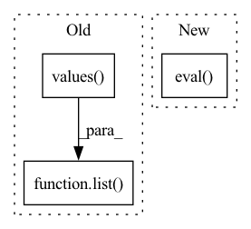

Pattern ID :24335
Before Change
self.trainer = trainer
self.softmax = Softmax(dim=-1)
self.entity_mapper = BIOLabelParser(
list( self.config.id2label.values()) , namespace=self.namespace()
)
self.bio_preprocessor = BioLabelPreProcessor()
After Change
self.config = AutoConfig.from_pretrained(path)
self.tokeniser = AutoTokenizer.from_pretrained(path, config=self.config)
self.model = AutoModelForTokenClassification.from_pretrained(path, config=self.config)
self.model = PLAutoModelForTokenClassification(self.model).eval()
self.trainer = trainer
self.softmax = Softmax(dim=-1)
self.bio_preprocessor = TokenizedWordProcessor(confidence_threshold=0.03)
In pattern: SUPERPATTERN
Frequency: 5
Non-data size: 3
Instances Fragment ID: 75579168
Project Name: astrazeneca/kazu
Commit Name: 017b9e844eee4103402b4bb67185e6c3a60c6d0d
Time: 2022-11-30
Author: richard.jackson4@astrazeneca.com
File Name: kazu/steps/ner/hf_token_classification.py
M Class Name: TransformersModelForTokenClassificationNerStep
N Class Name: TransformersModelForTokenClassificationNerStep
M Method Name: __init__(8)
N Method Name: __init__(8)
M Parent Class: BaseStep
N Parent Class: BaseStep
M File Name: kazu/steps/ner/hf_token_classification.py
N File Name: kazu/steps/ner/hf_token_classification.py
M Start Line: 46
M End Line: 75
N Start Line: 47
N End Line: 71
Before Change
tracer = NodePathTracer()
tracer.trace(model)
pprint(list( tracer.node_to_qualname.values()) )
def get_intermediate_nodes(model: nn.Module, return_nodes: Dict[str, str]) -> nn.Module:After Change
train_tracer = NodePathTracer(**tracer_kwargs)
train_tracer.trace(model.train())
eval_tracer = NodePathTracer(**tracer_kwargs)
eval_tracer.trace(model.eval() )
train_nodes = list(train_tracer.node_to_qualname.values())
eval_nodes = list(eval_tracer.node_to_qualname.values())
if len(train_nodes) == len(eval_nodes) and [ Fragment ID: 75579165
Project Name: feng-lab/pytorch-image-models
Commit Name: 02c3a75a45deea8b8728da14e0d0b5106e06d98b
Time: 2021-11-12
Author: alexander.soare159@gmail.com
File Name: timm/models/fx_features.py
M Class Name: AnonimousClass
N Class Name: AnonimousClass
M Method Name: print_graph_node_qualified_names(2)
N Method Name: print_graph_node_qualified_names(1)
M Parent Class:
N Parent Class:
M File Name: timm/models/fx_features.py
N File Name: timm/models/fx_features.py
M Start Line: 161
M End Line: 173
N Start Line: 218
N End Line: 254
Before Change
def predict_one(self, x: dict):
if self.net is None:
self._init_net(len(list( x.values()) ))
if len(self._x_window) == self.window_size:
if self.append_predict:After Change
x = copy.deepcopy(self._x_window)
x.append(list(x.values()))
x = list2tensor(x, self.device)
self.net.eval()
return self.net(x).item()
else:
return 0.0
Fragment ID: 75579164
Project Name: online-ml/river-torch
Commit Name: 4be0df42037cf98cfe1bdf1f261b2ac318e22eeb
Time: 2022-07-20
Author: cazzonelli@fzi.de
File Name: river_torch/regression/regressor.py
M Class Name: RollingRegressor
N Class Name: RollingRegressor
M Method Name: predict_one(2)
N Method Name: predict_one(2)
M Parent Class: RollingDeepEstimator,base.Regressor
N Parent Class: RollingDeepEstimator,base.Regressor
M File Name: river_torch/regression/regressor.py
N File Name: river_torch/regression/regressor.py
M Start Line: 102
M End Line: 102
N Start Line: 119
N End Line: 129
Before Change
def predict_proba_one(self, x: dict) -> typing.Dict[base.typing.ClfTarget, float]:
if self.net is None:
self._init_net(len(list( x.values()) ))
if len(self._x_window) == self.window_size:
if self.append_predict:
self._x_window.append(list(x.values()))After Change
x.append(list(x.values()))
x = list2tensor(x, device=self.device)
self.net.eval()
yp = self.net(x).detach().numpy()
proba = {c: 0.0 for c in self.classes}
for idx, val in enumerate(self.classes):
proba[val] = yp[0][idx] Fragment ID: 75579167
Project Name: online-ml/river-torch
Commit Name: 4be0df42037cf98cfe1bdf1f261b2ac318e22eeb
Time: 2022-07-20
Author: cazzonelli@fzi.de
File Name: river_torch/classification/classifier.py
M Class Name: RollingClassifier
N Class Name: RollingClassifier
M Method Name: predict_proba_one(2)
N Method Name: predict_proba_one(2)
M Parent Class: RollingDeepEstimator,base.Classifier
N Parent Class: RollingDeepEstimator,base.Classifier
M File Name: river_torch/classification/classifier.py
N File Name: river_torch/classification/classifier.py
M Start Line: 257
M End Line: 257
N Start Line: 272
N End Line: 282
Before Change
self.trainer = trainer
self.softmax = Softmax(dim=-1)
self.entity_mapper = BIOLabelParser(
list( self.config.id2label.values()) , namespace=self.namespace()
)
self.bio_preprocessor = BioLabelPreProcessor()
After Change
self.config = AutoConfig.from_pretrained(path)
self.tokeniser = AutoTokenizer.from_pretrained(path, config=self.config)
self.model = AutoModelForTokenClassification.from_pretrained(path, config=self.config)
self.model = PLAutoModelForTokenClassification(self.model).eval()
self.trainer = trainer
self.softmax = Softmax(dim=-1)
self.tokenized_word_processor = TokenizedWordProcessor(
detect_subspans=detect_subspans, Fragment ID: 75579166
Project Name: astrazeneca/kazu
Commit Name: 422eb2bceb9b3988a63113d66d19b1298220cec1
Time: 2022-11-30
Author: richard.jackson4@astrazeneca.com
File Name: kazu/steps/ner/hf_token_classification.py
M Class Name: TransformersModelForTokenClassificationNerStep
N Class Name: TransformersModelForTokenClassificationNerStep
M Method Name: __init__(10)
N Method Name: __init__(9)
M Parent Class: BaseStep
N Parent Class: BaseStep
M File Name: kazu/steps/ner/hf_token_classification.py
N File Name: kazu/steps/ner/hf_token_classification.py
M Start Line: 47
M End Line: 79
N Start Line: 46
N End Line: 83